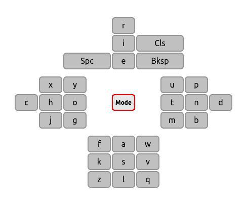

Projects
NSEW Virtual Keyboard
NSEW is a virtual keyboard designed for remote controllers and for use in situations where only four directional and one selection keys are available. The usual layout found in virtual keyboards used in televisions, videogames or others is annoying (it takes a huge amount of time to type a four/five letter word).
With NSEW this problem is solved because the keys are distributed around a central key (Mode). Each time you select a letter the cursor returns to the central key. The character around the Mode key are sorted based on the frequency distribution in the selected language (default is English).
